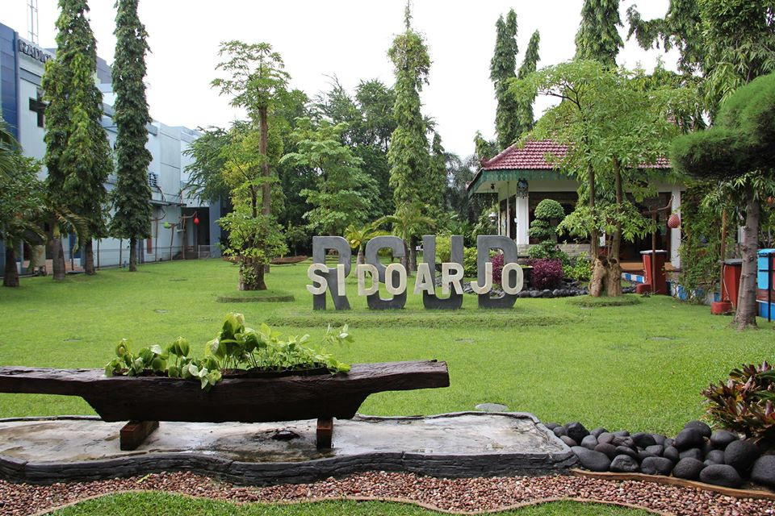
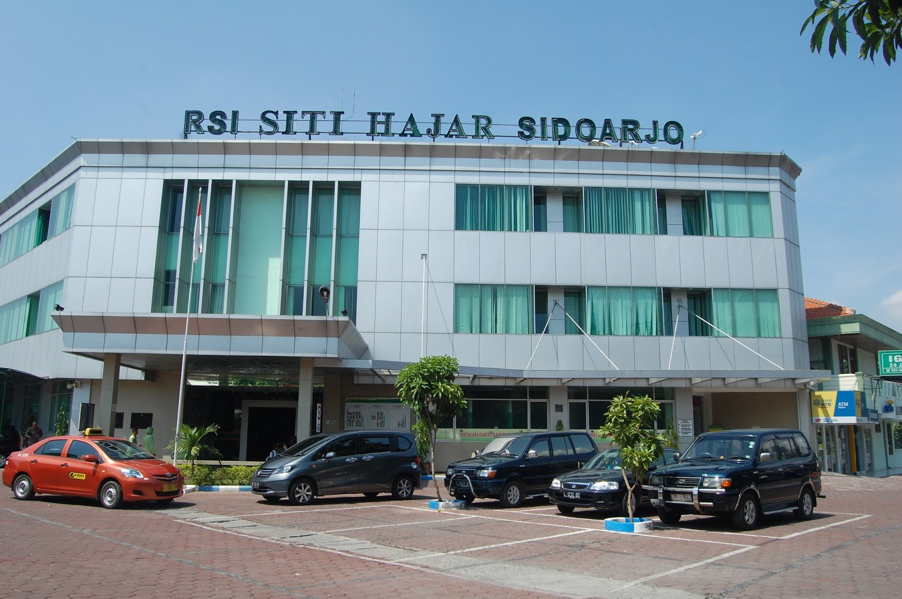
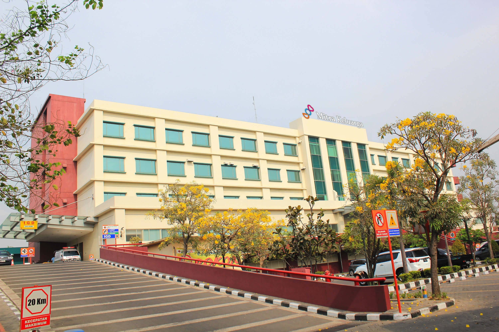
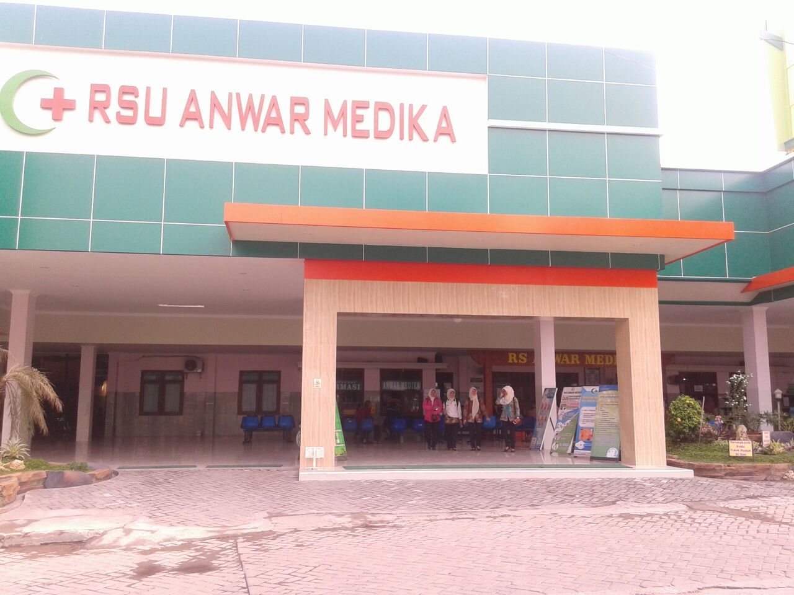

Informasi Ringkas Kasus Covid-19 hari ini [update: 11 Mei 2020 ]
188
Positif
14
Sembuh
20
Meninggal
893
Orang Dalam Pemantauan (ODP)
238
Pasien Dalam Pengawasan (PDP)
Sumber: (https://www.instagram.com/dinkes_sidoarjo)
Kenali Gejala Covid-19
Demam
Demam menunjukkan gejala awal munculnya virus Covid-19, biasanya suhu demam mencapai 38 derajat celcius keatas
Batuk Kering
Batuk kering tidak beriak dan berulang-ulang merupakan tanda infeksi aktif pada paru-paru, yang memungkinkan disebabkan oleh virus Covid-19
Sakit Tenggorokan

Infeksi virus Covid-19 akan melalui jalur pernafasan sehingga dapat mengakibatkan radang padat tenggorokan serta timbul rasa nyeri
Sakit Kepala
Dengan adanya demam tinggi, virus Covid-19 seringkali diikuti dengan gejala sakit kepala
Lemas
Infeksi terhadap virus Covid-19 yang telah menyebar ke seluruh tubuh akan menghabiskan energi yang banyak sehingga seringkali dapat mengakibatkan lemas
Sesak Nafas
Apabila virus Covid-19 berkembang dengan cepat dan besar di paru-paru, fungsi paru-paru akan menurun sehingga terjadinya sesak nafas
Sumber: (hhttp://checkupcovid19.jatimprov.go.id)
Rincian Informasi Kasus Covid-19 hari ini [update: 11 Mei 2020]
188
Positif Covid-19
14
Positif Covid-19
Sembuh
20
Positif Covid-19
Meninggal
238
Pasien Dalam Pengawasan (PDP)
25
(PDP) Sembuh
22
(PDP) Meninggal
893
Orang Dalam Pemantauan (ODP)
670
(ODP)
Sembuh
Sumber: (https://www.instagram.com/dinkes_sidoarjo)
Tabel Sebaran Kasus Covid-19
| Kecamatan | ODP | PDP | Positif | Meninggal | Sembuh |
|---|---|---|---|---|---|
| Tarik | 22 | 2 | 1 | 0 | 0 |
| Prambon | 10 | 4 | 2 | 1 | 0 |
| Krembung | 14 | 0 | 0 | 0 | 0 |
| Porong | 8 | 5 | 0 | 0 | 0 |
| Jabon | 27 | 4 | 0 | 0 | 0 |
| Tanggulangin | 12 | 5 | 4 | 0 | 1 |
| Candi | 25 | 17 | 21 | 4 | 3 |
| Sidoarjo | 279 | 30 | 30 | 1 | 6 |
| Tulangan | 28 | 11 | 4 | 0 | 0 |
| Wonoayu | 21 | 9 | 3 | 0 | 1 |
| Krian | 38 | 7 | 11 | 1 | 0 |
| Balongbendo | 21 | 5 | 2 | 0 | 0 |
| Taman | 44 | 38 | 27 | 0 | 1 |
| Sukodono | 32 | 16 | 10 | 3 | 0 |
| Buduran | 106 | 8 | 10 | 1 | 1 |
| Gedangan | 52 | 15 | 9 | 1 | 0 |
| Sedati | 19 | 4 | 10 | 1 | 0 |
| Waru | 52 | 47 | 44 | 7 | 1 |
Sumber: (https://covid19.sidoarjokab.go.id)
Rumah Sakit Rujukan

RSUD Sidoarjo

RSI Siti Hajar Sidoarjo

RSU Mitra Keluarga Waru Sidoarjo

RSU Anwar Medika
Sumber: (https://covid19.sidoarjokab.go.id)
Informasi Layanan Penanganan Covid-19
Layanan Darurat
119
DINKES
(031) 8941051
BPBD
(031) 8953200
RSUD Sidoarjo
(031) 8961649
Sumber: (https://covid19.sidoarjokab.go.id)